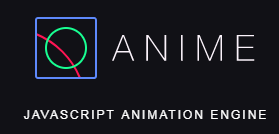
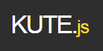
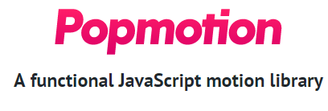
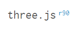

To Do Today:
-
CSS vs. JS
Compare and contrast the use of CSS versus JavaScript for building motion graphics
-
JS
Build simple animations using native JavaScript
-
JS Frameworks
Build simple animations using popular JavaScript frameworks
10,000 foot view:
Ways to Animate in the Browser
-
DOM animation
We are here
-
SVG animation
-
2D Canvas animation
-
3D animation and WebGL
How Firefox renders/reflows the DOM
{kind=link}
{kind=link}
- Parse phase - Parses your HTML to make DOM; Parses your CSS to make CSSOM
- Layout phase = DOM + CSSOM
Render tree contains all info about any element's width, height etc. → see video → - Paint phase
3 Approaches to DOM Animation
-
CSS Transitions
- interpolation states is calculated automatically by the browser
-
CSS Keyframe animation
- allows for a greater control between states where each interpolation state (aka keyframe) can loop
-
Javascript
old native JS (setInterval, classes, el.style.____)
jQuery
an animation library such as Greensock
new native JS - Web Animation API
- Use CSS animations for simpler "one-shot" transitions, like toggling UI element states (may use JS to control states)
- Use JavaScript animations when you want to have advanced effects like bouncing, stop, pause, rewind, or slow down
- If you choose to animate with JavaScript, use the Web Animations API or a modern framework that you're comfortable with
Examples of the 3 Approaches
CSS Transitions
Browsers calculate interpolation states
#element {
transition: transform 3s;
}
#element:hover {
transform: translateX(200px);
}
Pose to Pose
CSS Keyframe Animations
greater control of interpolation between states
#moveit:hover {
animation: moveIt 3s;
}
@keyframes moveIt {
100% {
transform: translateX(200px);
}
}
More frequent pose to poses within the same time frame.
old native JS via setInterval
greatest control and flexibility
const p = document.querySelector('#js-move');
p.addEventListener('mouseover', () => {
let leftpx = 0;
setInterval(() => {
p.style.left = `${leftpx++}px`;
}, 16);
});
Solid drawings
Why javascript animation?
It provides the greatest control and flexibiliy
Scripted animations can be done in native JS but most use a JS library such as GreenSock(GSAP), jQuery, just to mention a few.
CSS Transitions and Animations
Pros
-
You don’t need an external library
-
performance is great
-
You can listen for onAnimationEnd, transitionend, or other hooks with native JS
-
easy to use for responsive development because you can use media queries
Cons
-
With only two handles to shape the bezier, you can’t produce complex physics effects for realistic motion
-
Sequencing in CSS becomes complex; If you go beyond chaining three animations in a row, you should use JS
-
CSS + SVG animation has some strange quirkiness in behaviour
Some JS Animation Libraries
- 
- 
- 
- 
Most libraries are using native animation technologies under the hood anyway, so the more that you know about these, the more you’ll be able to negotiate what is happening when it becomes abstracted
Sarah Drasner
A Comparison of Animation Technologies
native JS via setInterval
setInterval introduced many developers to animations, but it is imprecise and can lead to stuttering animations.
const h = document.querySelector('#vjs');
h.addEventListener('click', () => {
let leftpx = 0;
const id = setInterval(() => {
leftpx += 12;
h.style.left = `${leftpx}px`;
if (leftpx > 200) { clearInterval(id); }
}, 16);
});
However, see new Web Animations API - (see caniuse)
jQuery
Isn’t solely an animation library, but it has animation methods and a ton of people use it
$(document).ready(function () {
$("#jq").click(function (event) {
$(this)
.css("left", "0")
.animate({ left: "+=200" });
});
});
Greensock
improve JavaScript performance and have been tested in many situations to be the best they can be. They still, however, require maintaining and loading external libraries.
const h1 = document.querySelector('#gsap');
h1.addEventListener('click', () => {
TweenMax.to(h1, .4, { x: 200 });
});
Web Animation API
The new Web Animations API is native JavaScript that allows you to create more complex sequential animations without loading any external scripts
This native [Web Animation] API is part of a movement to align the performance of CSS animations and the flexibility of sequencing in JavaScript under one roof.
A Comparison of Animation Technologies
2 Ways to use Web Animation API
// via function .animate()
var element = document.querySelector('.anime-js');
var effect = [...];
var options = {...};
var move = element.animate(effect, options);
// via constructors new Animation()
var element = document.querySelector('.anime-js');
var effect = [...];
var options = {...};
var keyframes = new KeyframeEffect(element, effect, options);
var move = new Animation(keyframes, element.ownerDocument.timeline);
move.play();
const player = document.querySelector('#waapi').animate(
[
{ transform: 'none' },
{ transform: 'translateX(200px)' }
],
{
duration: 400, //milliseconds
easing: 'linear',
delay: 0,
iterations: 1,
direction: 'normal',
fill: 'forwards'
});
player.pause();
const waapi = document.querySelector('#waapi');
waapi.addEventListener('click', () => player.play());
Web Animation API
a new way to control animations; like Greensock but native js
See the Pen attempt 5 - classList.toggle + click by A.V. ( @avcoder) on CodePen.
Attempt 5 - use JS to add class
Try adding an event listener for 'transitionend' then do something
CSS "Callback Functions":
-
animationiteration
-
animationend
-
animationstart
-
transitionend
See the Pen js animation - add class by A.V. ( @avcoder) on CodePen.
Challenge - use JS to add class
See the Pen Mouse movement button with border-radius by Tobias Reich ( @electerious) on CodePen.
Challenge - use CSS variables and JS to make gradient hover button
See the Pen web animations API by A.V. ( @avcoder) on CodePen.
Web Animation API Demo
See the Pen wesbos' javascript30 - flex panel exercise by A.V. ( @avcoder) on CodePen.
Flex Panel Exercise
use JS to make panels expand on click
jQuery
Pros
-
A lot of sites already have it loaded, so it’s usually readily available
-
syntax is really easy to read and write
-
They recently moved over to requestAnimationFrame, so in versions 3.0.0 and greater, the performance will be better than before
Cons
-
Versions earlier than 3.0.0 performance is not great and not recommended
-
Animations aren’t supported on SVG in any version
-
jQuery is limited to the DOM, unlike tools like GSAP which work on anything
GreenSock (GSAP)
Pros
-
It’s extraordinarily performant for something that’s not native
-
sequencing tools (like timeline) are as easy to read/write with one line of code
-
They have a ton of other plugins if you want to do fancy things like animate text, morph SVGs, or draw paths.
-
It solves SVG cross-browser woes.
Cons
-
You have to pay for licensing if you're re-selling your product to multiple users (apps and paid-access sites)
-
As with any external library, you have to watch which versions you are using in production. When new versions come out, upgrading will involve some testing (like any library)
-
You'll also need to consider the size of the library
Web Animations API
Pros
-
is native JavaScript that allows you to create more complex sequential animations without loading any external scripts.
-
Sequencing is easy and super legible
-
Performance seems to be on track to being very good
Cons
-
Support is not great right now. It’s also still changing a bit so while the spec is moving... be cautious about running it in a production environment
-
There are still a lot of things about the timeline in GSAP (which we'll be covering in a moment) that are more powerful.
Do Discussion 2
Think about the different approaches to implementing motion graphics in the browser that we've just learned about.
Create a new thread, and in 2-3 sentences, explain what approach you feel is the most effective and why. Perhaps you feel that a certain approach is best for a certain application? Comment on at least one of your peer's threads.
Discussion 2 + Break
(15 mins) + (15 mins)
= 30 mins
* * *
More CSS vs. JS articles
Summary:
- You've gained some experience thinking through each part of an animated interactive widget or element using not much more than a pencil and paper. You really don't need fancy software for this type of work.
- You've spent valuable time thinking through how the user will interact with the widget and how it might enhance the user experience.
- Often with motion graphics and user interfaces, less is more. Be subtle.
Do in-class exercise 6
(then Project 1)
until end of class
https://codepen.io/avcoder/pen/JpxjmM
* * *
More Animation Stuff
References
- Wes Bos - Javascript30.com
- https://x-team.com/blog/web-animations-beginners-bible/
- https://medium.com/@milberferreira/how-web-animation-works-e133e486d013
- https://developers.google.com/web/fundamentals/design-and-ux/animations/css-vs-javascript
- https://css-tricks.com/restart-css-animation/
- https://github.com/wesbos/JavaScript30/tree/master/05%20-%20Flex%20Panel%20Gallery
- https://www.youtube.com/watch?v=SmE4OwHztCc
- https://blog.prototypr.io/stunning-hover-effects-with-css-variables-f855e7b95330
- https://pawelgrzybek.com/intro-to-the-web-animations-api/
- https://css-tricks.com/comparison-animation-technologies/
- https://css-tricks.com/myth-busting-css-animations-vs-javascript/